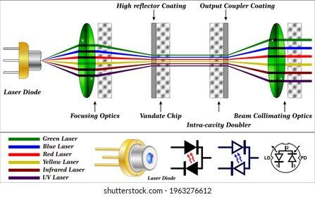

Laser Module
Introduction
A laser module is a precision optical device that emits a highly focused beam of light. Laser stands for Light Amplification by Stimulated Emission of Radiation. Unlike ordinary light, a laser beam is coherent, monochromatic, directional, and highly energetic. Laser modules are commonly used in engraving, cutting, measurement, scanning, communication, and scientific applications.
Types of Laser Modules
- Diode Lasers: Compact, low-power modules (1–5W) used in engraving and marking machines.
- CO2 Lasers: Gas lasers (10–150W) used for cutting wood, acrylic, and fabrics.
- Fiber Lasers: High-power, compact solid-state lasers used for metal marking.
- DPSS (Diode-Pumped Solid-State): Produces green or blue laser light for precision applications.
Working Principle
Laser modules operate on the principle of stimulated emission. Inside the module:
- The laser diode emits photons when electrons recombine with holes in the semiconductor material.
- Mirrors inside the cavity reflect photons, stimulating more photon emissions in phase, creating a coherent beam.
- A collimating lens shapes the beam into a narrow, focused line that can be precisely controlled.
Electrical Components
- Laser Diode: Core element producing light.
- Driver Circuit: Regulates voltage/current for stable laser operation, protects against overcurrent, and allows PWM/TTL control.
- Heatsink & Cooling Fan: Dissipates heat to maintain diode efficiency and lifespan.
- Collimating Lens: Focuses the laser to a tight point.
- Protective Housing: Metal enclosure for safety and durability.
Optical Characteristics
- Wavelength: 405–450 nm for blue lasers, 520–532 nm for green, 650 nm for red.
- Beam Divergence: 0.5–2 mrad (smaller is tighter beam).
- Spot Size: Depends on lens and distance, usually 0.1–1 mm.
- Power Output: 1–5W for engraving modules; up to 150W for industrial CO2 lasers.

Applications
- Laser engraving on wood, acrylic, leather, and plastics.
- Cutting thin sheets of wood, acrylic, cardboard, or soft metals.
- Precision marking on metals and circuit boards.
- Measurement systems, optical sensors, and laser alignment tools.
- Scientific experiments, holography, and optical communication.
Advantages
- High precision and repeatability.
- Non-contact processing reduces material deformation.
- Fast operation compared to manual cutting/engraving.
- Works with various materials, from wood to metal.
- Long lifespan if properly cooled and powered.
Limitations
- Laser safety is critical — can cause eye/skin damage.
- High-power modules require good heat dissipation.
- Limited cutting depth depending on power and material.
- Material reflectivity can affect performance (especially metals for diode lasers).
Connection with MKS Board
Laser modules connect to the MKS board typically via a 12V power output and a PWM/TTL control signal. - The 12V line powers the diode and driver circuit. - The PWM signal from the MKS board controls laser intensity, allowing precise engraving patterns. Proper wiring, current limiting, and cooling are essential to avoid damage.
Safety Precautions
- Always wear laser safety goggles suitable for your laser’s wavelength.
- Never look directly at the beam or its reflection.
- Keep the module securely mounted and avoid loose wires.
- Ensure proper ventilation — fumes from engraving materials can be harmful.
- Disconnect power before adjusting lenses or wiring.
- Follow manufacturer current and voltage ratings strictly.
Maintenance Tips
- Regularly clean the collimating lens to avoid beam distortion.
- Check cooling fans for dust and proper operation.
- Verify driver circuit connections for stability.
- Monitor diode temperature; avoid running continuously at max power without proper cooling.